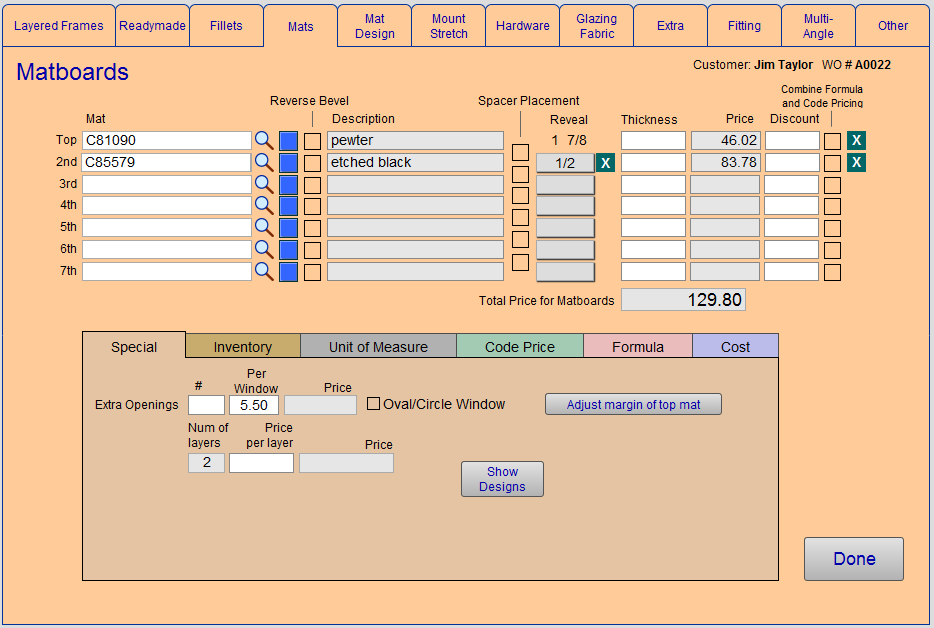
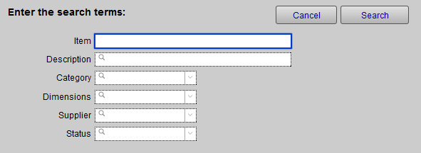
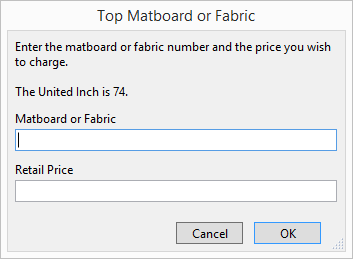
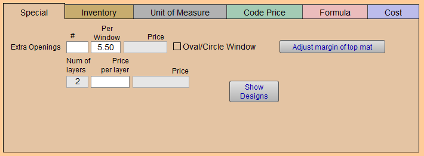
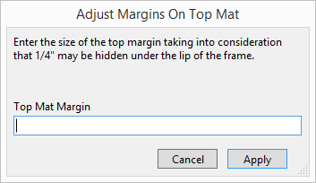
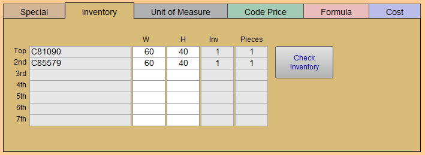
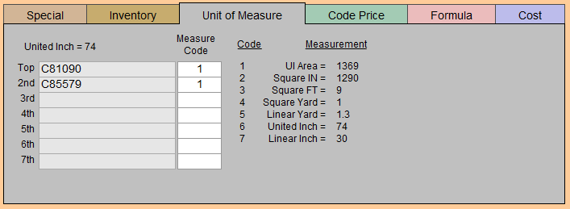
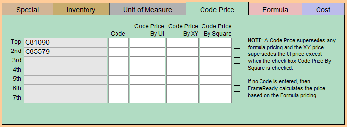
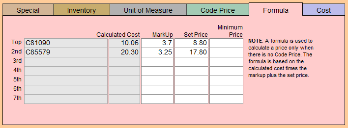
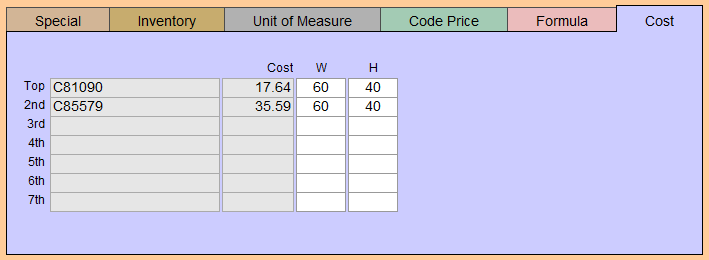

Matboard Detail Screen
Matboard Detail Screen Explained
Here you can see more details about the item, enter up to seven mats, check inventory, delineate reverse bevels and spacer placement
Tip: The tabs at the top of each Work Order Detail Screen allow you to move through the Work Order in different ways.
-
Enter up to seven mats, check inventory, delineate reverse bevels and spacer placement.

Top Section of Matboard Detail Screen
Mat Field
-
Use a barcode scanner or type the item # exactly with prefix, e.g. for Bainbridge 8520, enter B8520 .
-
When a barcode number is scanned or typed into the matboard field, the scanned number is used to lookup the item. When the matboard is found, the screen will display the Item Number, e.g. B8805.
-
The barcode number is only used to lookup the item. The Item Number and Description appear on both your computer screen and on printed reports.
Magnifying glass icon
-
Use to perform a look-up of mat by Matboard or Fabric #, Supplier and Group.
-
This is the best way to enter a mat if you do not use the bar code.

Tip: You only need to type in the first two or three digits of the item in the search screen.
-
You only need to type in the first two or three digits of the item in the search field, then click OK. The more fields filled in, the narrower the search becomes. If only one mat meets the criteria then it will be entered in the field. If more than one mat matches the criteria, a list appears. Click on the mat you want.
Blue "Override" Button
-
Click to enter items (name and retail price) not yet in your system.

-
Type in the Mat or Fabric # and retail price you wish to charge. You may also specify the Reveal needed.
Tip: This is a handy feature if you are pricing a new mat not yet entered in the Price Codes file or pricing a drop-out.
Reverse Bevel Checkbox
-
Used to indicate that the mat requires a reverse bevel cut.
-
Mark an X in the Reverse Bevel box if this mat requires a reverse bevel cut. It will appear on the printed Work Order below the corresponding mat.
Description Field
-
Values are pulled from the Price Codes file.
-
If a matboard has a status of Not Verified or Discontinued, then the status appears in the Description field.

Spacer Placement Checkbox
-
Use to alert the framer as to where spacers need to be placed, if required.
-
Mark an X in this box if you wish to alert the framer as to where spacers need to be placed, if required.
Reveal Field
-
Use to enter the Reveal for each mat.
-
If mounting fabric over a substrate, then select the fabric # in Top field and substrate in 2nd field. Selecting Fabric therefore does not reduce the size of the top mat.
Thickness Field
-
Values are pulled from the Price Codes file.
-
Value affects the depth required for framing components shown on the main Work Order screen.
Price Field
-
The retail Price field is pulled from the Price Codes file.
Discount Field
-
Use to apply a percentage discount. Stored in decimal form, e.g. .10 = 10%
Combine Formula and Code Pricing Checkbox
-
Values are pulled from the Price Codes file.
-
You may also choose this option here if a code is present.
Clear (X) Button
-
Use to remove the line item.
Total Price for Matboards Field
-
The total for all mats selected with any discounts applied.
-
Not modifiable.
Done Button
-
Returns to the Mats detail screen.
Bottom Section of Matboard Detail Screen
Special Tab

Pertains to information on CMC and extra opening pricing.
Extra Openings Field
-
FrameReady assumes that one window is cut.
-
Enter the extra amount in the # field.
Per Window Field
-
The Price Per Window, defaulted in Main Menu > Work Order > Options tab> Enter Default Mat Reveals. Over-ride here.
Price Field
-
The total Price of extra openings.
Oval/Circle Window Checkbox
-
Check when cutting this type of window.
-
An icon will appear on the printed Work Order as a visual reminder to the framer.
Num of Layers, Price Per Layer, Price Field
-
Num of layers, Price per layer, and Price refer to the CMC corner count or number of mats. These fields are used by the CMC module.
Wizard Field
-
The name of the Wizard™ design.
Show Designs Button
-
Click to see the Wizard™ template menus.
Adjust margin of top mat Button
-
Specify the amount of the upper mat to be shown and recalculate the overall combinations of mats, reveals, and fillets.

Inventory Tab

Pertains to how much of the mat is used, quarter, half or full sheet for the size on the order.
W and H Fields
-
Width and Height show the size of the stock, whether 32×40 or 40×60.
Inv Field
-
The number of items in inventory.
Pieces Field
-
The number of pieces that can be cut from this size.
Check (Manual) Inventory Button
-
Access inventory data for each of the components.
-
Use the buttons to lookup the individual mats, mountings or glass items.
-
Qty = amount. X and Y = width and height. Total = sum (not price). Location = shop shelf or bin #.
-
Note: This is for manual inventory only. You may want to adjust your inventory as you work therefore this screen allows easy access to all components.
-
Supports up to seven mats.
Unit of Measure Tab

-
The price of each mat is based on how it is being measured: UI, square inch, square foot, square yard, linear yard, united inch, linear inch. A simple chart reveals the measure code for each mat along with the calculated measurement.
-
Supports up to seven mats.
Code Price Tab

-
Code, Code Price by UI and Code Price by XY populate from the Price Codes file.
-
A Code Price over-rides any Formula Price
-
The XY price has priority over the UI price.
-
The price code can be changed on this screen but only for the current Work Order.
-
Supports up to seven mats.
Formula Tab

-
This tab calculates the mat or fabric pricing using a formula.
-
A formula is used to calculate a price only when there is no Code Price.
-
The formula is based on the calculated Cost multiplied by Markup plus Set Price.
-
If left blank, pricing will default to calculating the area based on the UI (united inch divided by 2 squared).
-
Supports up to seven mats.
Cost Tab

-
The Cost is based on the size as indicated.
-
Values originate from the Price Codes file.
© 2023 Adatasol, Inc.